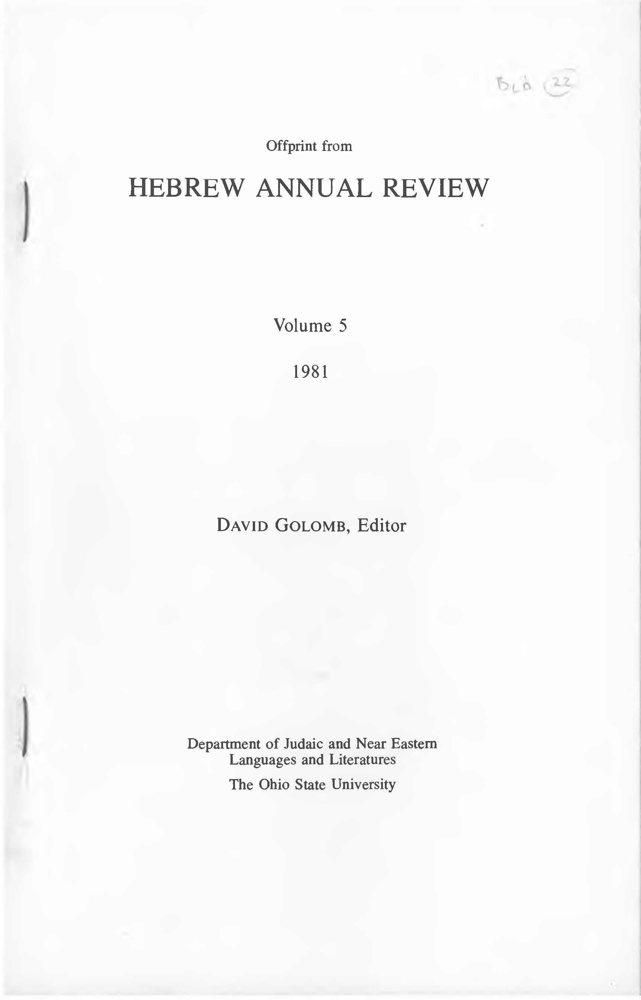

07a.22 Syntactic-Semantic Structure and the Reflexes of Original Short a in Tiberian Pointing
Offprint from
HEBREW ANNUAL REVIEW
Volume 5
1981
David Golomb, Editor
Department of Judaic and Near Eastern Languages and Literatures
The Ohio State University
SYNTACTIC/SEM ANTIC STRUCTURE AND THE REFLEXES OF ORIGINAL SHORT a IN TIBERIAN POINTING.
By
E. J. REVELL
University of Toronto
abstract: General statements on the history of vowel change account satisfactorily for most of the reflexes of original short vowels which appear in the Masoretic Text but not all. This article examines three cases in which the reflexes of short vowels have not been fully explained: the pointing of conjunctive waw immediately before a stressed syllable, and of monosyllables in which short a was followed by a doubled consonant, or in which a short vowel was followed by a consonant plus yod. In each case either of two reflexes may appear in non-pausal situations. The article concludes that appearance of one reflex rather than the other was determined by suprasegmental contours which delimited phrases. It is further argued that these same contours determine the appearance of patah, rather than qames in closed stressed final syllables in contextual forms of verbs.
- INTRODUCTION
The reflexes in the Masoretic text of the original short vowels, a, i, and u can be divided into two groups: “long” and “short”. The “long” reflexes, appearing in stressed, or open “pre-tonal” syllables, are qames, sere (or patah), and holem respectively. The “short” reflexes appearing elsewhere are shewa in an open syllable, and patah, segol, hireq, qames, or qibbus in a closed syllable.1 General statements on the history of vowel change in Hebrew account satisfactorily for the appear ance of a reflex from one group or the other in most cases. There are, however, exceptions, particularly with short a, in which the reasons for the
- The terms “long” and “short” are here used as a convenience, to permit general statements, and avoid the need constantly to name particular vowels. They should not be taken as implying that there necessarily was a significant difference in length in the vowels of words such as ‘am ‘people’, ’em ‘mother’, bat ‘daughter’, and ’ap ‘nose’.
75
76
E. J. REVELL
appearance of a particular reflex in MT are not clear. In this paper three situations of this sort are described: the use of qames with conjunctive ww; the vowels used in nouns of base form CaC: (originally a mono- syllable with a short a followed by a doubled consonant); and CVCy (originally a monosyllable with a short vowel followed by a cluster formed of a consonant plus y). It is suggested, on the basis of this description, that the reflexes of original short vowels in these situations are conditioned by suprasegmental contours, as in the case of construct and pausal forms. Finally a fourth situation of this sort, the use of patah in the final syllable of verb forms, is considered in the light of this suggestion.
- THE USE OF QAMES WITH WAW
The vowel of the conjunction ww in Hebrew, appears in MT as qames in a number of situations. In the most common, waw “consecutive” before the les imperfect, the appearance of this long reflex of the original short vowel is easily explained as compensating for the loss of the original doubling of the "alep of the first person pronoun. In the other cases in which qames appears, however, there is no obvious explanation for the use of this long reflex, and the treatment of this phenomenon in the gram- mars is generally vague and incomplete, and sometimes incorrect.2
The conditions under which most cases of waw with qames (apart from ww “consecutive”) occur can be described in a single statement. Where the conjunction joins two or more words of the same grammatical class which function as a unit (i.e. as the equivalent of a single word of that class), if the last member of the group is stressed on its first syllable, the conjunction ww preceding it has qames. Groups of this sort contained within one biblical verse most commonly have two members, but may have up to ten.3 Words grouped in this way are most commonly nouns (example 1), but the statement is true for words of any kind: e.g. infinitives (2), even a noun and an infinitive where they function as a unit (3), pronouns (4), verbs (5), adverbs (6), or prepositional phrases (7).
- judg 19:19
א יל־שי
ןייו
םגץ םחל
- Gen 8:7
3 Isa
חטבו 32:17
אציו בו'שץ\וצי טקשח האיצה /· — tt:' -
-;·-r
'תדבעו
- The most exhaustive description is that of Böttcher, 1866, §600 (vol. I, p. 396-8).
- Lists of names may extend over several verses (as Josh 15:21-32), but nothing definite can be said about the use of ww with qames in such lists as a whole (see examples 20-25 below).
SYNTACTIC/SEMANTIC STRUCTURE
77
- Gen41:11
... ינא אוהו
a T j· -1
המלחפו
/T״*-------
-
1 Sam 12:2
-
Exod 2:12
-
1 Kgs 17:18
יתבשו
יתנקז י־“4“ ופיו הפ הכו - יל-המ
-r ולו * *
'ינאו
A pair or list of words of this sort can function in any position available to a member of the same class. Thus a pair of nouns can function as subject of a clause (1, 4), or as predicate (3), or as object of a verb (37), or of a preposition (Isa 34:17), or as governed item in the bound structure (20, 24). Such a pair even follows the definite article in Jer 29: 23, Neh 1:5.4 Similarly, a pair of adjectives can function either as a simple attrib- utive (8), or in the comparative structure (9).
- Gen 18:7 '
ךר בוטו
רקבתב
T
TT V
- Deut 9:14 ·
ונממ
ברו
םוצע-יוגל
1· ״ vrv /T
In compound numerals, qames is used with according to the description, before the last member of the compound if it is stressed on its first syllable (10). This is true even where the numeral is followed by the noun numbered (ll).5 The phenomenon also occurs with words de- noting units of measurement (12),6 and with the word ‘half’ in phrases stating measurements (13). Certain adverbs (formed with heh “direc- tional”) used to express measurements in terms such as ‘from X and up- wards’ also have qames on prefixed waw if they are stressed on the first syllable (14).7
-
2 Chr 16:12 ''
-
Gen 17:24
-
1 Sam 17:4
-
Exod 25:17
םי^שולשי^תנשב \ ’ I םהרבאו י־י·:־־
*
ותוכלמל ״ תו0ע תנש xr-r תרזו. הכרא
עשתו
םיעשת־ןב ·· /· ·): שש והבג םיתמא T1T · ־־ -r y-־r —
תומא 'יצחו
- Lev 27:7 '
הלעמו
הנש
םיטש־ןבמ
-
These readings may not be original (cf. BHS notes), but that is irrelevant here. The case in Neh 1:5 is noted in the Masorah (cf. BHS) so that the error—if it was caused by one—must have occurred before the final stages of the development of the text.
-
So also with ‘six’ (1 Kgs 10:14 etc.); wsh‘ ‘seven’ (1 Kgs 16:15 etc.); w,sr ‘ten’
(Gen 50:22). Note also w’lp ‘thousand’ within a compound numeral (Num 26:51).
- Also tph ‘span’ (Ezek 40:5, 43:13).
- Also hl’h ‘onwards’ (Lev 22:27 etc.); byth ‘inwards’ (2 Sam 5:9, Ezek 44:17); hwsh
‘outwards’ (Num 35:4); ymh ‘westwards’ (Josh 15:46); and hnh ‘hither’ (1 Sam 20:21).
78
E. J. REVELL
Qames is also used with ww in two cases which are not included in the general statement above. It may be used before words stressed on the first syllable which form a clause by themselves (usually verbs), and it may be used before words stressed on the first syllable which occur within longer lists. Qames is used with waw before a verb which functions by itself as a clause in some 44 cases, most frequently with forms of mwt (15), and also commonly with hy (16).8 The negative ’yn also has qames on prefixed ww where it stands alone and functions as a clause (17). The same occurs in two cases with the negative /’ in recorded speech (18), and there is a single case of a similar usage with the affirmative ys (19).
- Deut 19:5
תמו
והער־תא /י־ V ״ ‘V ־
אצמו יח
A-T
- Deut 19:5
... יחו
אוה סוני
!TT
5/ T
-
Isa 41:17
-
2 Sam 13:26
ןיאו\ימ
םישקבמ * —r. 1 “״י בא0^םו א$ו * : t יי■
'רמאיו
7
—
- 2 Kgs 10:15
שי שיו ‘א
T y·· /TT
בדנוהי
רמאיו "י 7 י
Where more than two words joined by waw form a list, qames is regularly used with wtzw before the last, if it is stressed on its first syllable, but ww with qames may be used before any other word in the list (except the first) so long as it is stressed on its first syllable. There are few examples in which all, or even most, of the words in a longer list are stressed on the first syllable, so no very clear idea of the use of qames with ww within lists can be obtained. In lists of three words, the second item, where stressed on the first syllable, has qames on preceding waw in 20 cases (as example 20), and has s^wa in 16 cases (as example 21).9 In lists of four items, where the second and third are stressed on the first syllable, three of the four possible combinations of the use of qames and s^wa on
-
With forms of other verbs, Exod 12:32, Judg 9:29, 1 Sam 29:10, 2 Kgs 4:29, Isa 8:9, Jer 36:14, 48:1, 50:36, Zech 10:9, Prov 24:16, Eccl 8:10, and the anomalous whyh Exod 1:16.
-
The figures would be 22 with qames on the second item, 19 with if three- word units treated as separate verses but forming part of a list covering several verses (as 1 Chr 3:7, 8:22) were included. The use of qames on waw before the second item may sometimes reflect a deeper structure—e.g. zhb wksp ‘gold and silver’ is a common pair, and the use of qames on waw before ksp in the group zhb wksp wnhst ‘gold, silver and copper’ (Exod 25:3, 1 Chr 18:10, cf. Zech 14:14) may be due to this. However, it does not seem likely that this was a major factor, since the wording of conventional pairs or groups does not seem, overall, to have been very firmly fixed. Cf. e.g. sit wdbs wsmn ‘flour, honey, and oil’ (Ezek 16:13) with sit wsmn wdbs (Ezek 16:19).
SYNTACTIC/SEMANTIC STRUCTURE
79
preceding waw occur (22-24). The fact that there is no example in which waw has s^wa before the second item, but qames before the third, cannot be given very much weight, but it clearly was common to divide the items in lists into groups of two or three, with qames on waw before the last member of each group (as 24-25).10 The commonness of this type of arrangement is shown by the fact that, in lists of four or more words, the second item, where stressed on the first syllable, has qames on prefixed waw in 14 of 20 cases, while the second last has it in only six of 30 possible cases. However some lists (as 1 Chr 1:17, 9:36) clearly were not treated in this way.
-
Ezek 2:10
-
Lev 7:23
-
Gen 13:14
בותכו r · tv. J T ;
הילא
םינק הגהו יהו V ד- זעו בלח-לכ vT י· z ’· ” T המדקו
רוש בשכו
המיו
הבגנו
׳«־ TjT
V :;· T t T
Chr4:17
- Esth 1:6
דרמו · \·
ווליו 23. 1
רפעו AT: •3·: רדו ו : הלילו 8:22
תרחת ·.·»T
םויו
T — 7 .
ש׳שו־־טהפ .. v T — ףרחו r v
״ / ד-
- Gen
...
הארו
הנפצ T רח/ רתי
הרזע־־ןבו "
"t': t: ״ תפצר
ריקו םיחו ץיקו
ריצקו . ״ ▼ * : -ר
r:
ערז
·ותיבשי I *
אל /
As a general rule, a word stressed on the first syllable will not have qames on prefixed waw if it is closely associated with the word which follows it. Thus waw before a construct noun never has qames (e.g. 26). The case of nouns followed by attributives or other modifiers is less clear. Where a noun, otherwise suitable, is followed by an adjective, or a prep ositional phrase or similar modifier, qames may or may not be used (27-30). It may be generally true to say that where qames is used, the following modifier modifies the group of nouns as a whole, but that where qames is not used, it modifies the last word in the group. This could be maintained reasonably where the modifier is an adjective, but not in the other cases, where factors other than syntax must be involved."
- Gen 2:12
םהשה
ןבאו
הלדבה
םש
- Jer
לודג 48:3
הקעצ ןד- ·.y^ X W ·· ^tt:
םינורחמ
דש
רבשו
לוק /
-
Some grammars treat Gen. 8:22 (example 25) as a series of pairs. Certainly the phonological structuring (marked by qames with waw emphasizes here the semantic struc turing (in pairs of opposites) exactly as one would expect, but this semantic structuring is merely one possible way of dealing with the grammatical fact—eight nouns forming a unit acting as subject of the following verb.
-
The most probable factor would be the natural rhythm of rhetoric or recitation, but
this rhythm, if it had an influence, was not that marked by the accents.
80
E. J. REVELL
- 2 Kgs 6:14
דבכ
ליחו
בכרו
; א '*^A .
םיסיוס
זרמש-חלש-י
!
\
a yT
- Eccl 2:7
- 1 Kgs 1:19 *
היה יל ברל
וא^ו.
הבלה "ןאצו-אירמ-ו
לויב
ה^קמ
םג ורכזיו *
רוש
A verb form stressed on the first syllable does not usually show qames on preceding waw where it does not stand last in its clause (as 31). However this does occur with the second verb of a pair in five cases where it is followed by a modifier (as 32), and in five more where it is followed by a “vocative” (as 33). A single verb followed by its subject (34) or a modifier (as 35) has qames on preceding waw in nine cases.12
- 1 Kgs
דוד 1:13
ןלמה־לא
!יאבו
ל3י
- 1 Kgs 22:30
המחלמב
אבוישפחתה
- Isa 12:6
וויצ
וי0תב
A *
·j ·
ינ־רו
ילהצ
-
\ * / ·
-
Gen
33:13
ןאצה־לכ
... ·ותמו
'ם-וקפדו
- Lev 18:5
... יחו םהב
השעי
A׳'T J-T
/V—
Grammars describing the use of qames with waw do not regard it as following a fixed pattern, but there are, in fact, very few exceptions to the description just given. Where the second of a pair of words is stressed on the first syllable, and is not followed by a modifier, I have noted only eleven cases where qames is not used with prefixed ww,13 as against some 350 cases where it does occur (3% exceptions). There are four cases where qames is not used where expected at the end of a longer list.14 With a single verb, under the same conditions, qames is not used in three cases (see note 17), but is used in 53 (5% exceptions). There are no exceptions at all in the numeral and measurement categories. Some exceptions may be due, at least in part, to the phonological context. In seven of the 18 cases where expected qames does not occur, the stressed vowel is sureq.}5
- The verb in these nine case is always hy ‘live’ (Gen 3:22, Lev 18:5, 25:35, Ezek 20:11, 13, 21) or a form of mwt ‘die’ (Gen 33:13, 2 Kgs 7:4, Ezek 28:8), forms which make up two thirds of the other cases of single verbs preceded by waw with qames, so qames in some of these nine cases may appear by attraction. c, 13 ״. Ex0^17:12^4:14, 1 Sam^2:13, ^8:27, 1 Kgs 18)45, Isa 49:4, Jer 46:9, P/87:5, 94:6, Nel^6:2. 1 Ch? 5:18. /
\ X
$
/
/
- Exod^17:10, Jer 40:10, 1 Chr 1:32, 2 Chy3:14; w^׳w‘in Ezek 23:23 is considered to
be within a longer list.
- In proper nouns, hwr (Exod 17:10, 12, 24:14); pwt (Jer 46:9); swh (1 Chr 1:32); common nouns rwh ‘wind‘ (1 Kgs 18:45); bus ‘linen’ (2 Chr 3:14). One can also note the absence of qames on waw before proper nouns of this form with longer lists, as Ezek 30:5, but this is not necessarily significant.
SYNTACTIC/SEMANTIC STRUCTURE
81
Qames is used before this vowel in eleven cases,16 so sureq cannot be definitely said to cause the exceptions. However more than a third of the exceptions occur before this vowel, and these constitute more than a third of all cases where qames could be used in this situation, and include all cases with proper nouns. This suggests that sureq, although not deter minative, was at least a contributory cause of the failure to use qames with wow. The four cases where expected qames does not occur before a verb all occur with pausal forms in which the stressed vowel of the first syllable is replaced by sowa in context.17 Qames is used before such forms in four cases.18 There is, then, a tendency not to use wow before such forms, although there is, again, no clear case of conditioning.
In a few cases, wow before a word stressed on the first syllable has qames even though it is not second in a pair and does not function as a clause. With wry ‘earth’ (Isa 26:19, 65:17, Prov 25:3) this is certainly due to the influence of the common pair smym w’rs ‘heaven and earth’.19 The influence of a common pair is also probable in the case of wmlk ‘king’ in Prov 24:21. YHWH wmlk ‘Lord and King’ does not occur anywhere else in the Bible, but ’Ihym wmlk ‘God and King’ in 1 Kgs 21:10, 13, suggests that there was a common formula in which various forms of divine name may have been used. Similarly wrmh ‘spear’ in Judg 5:8 probably derives from a conventional pair mgn wrmh ‘shield and spear’. This pair occurs in the plural in Neh 4:10, 2 Chr 26:14, and a synonymous pair, snh wrmh is found in 1 Chr 12:9, 25, 2 Chr 14:7, with order reversed in 2 Chr 25:5, and in the plural in 2 Chr 11:12. A final case of anomalous use of qames with waw is the 3fs pronoun why’ in Ezek 23:43, where the syntax is obscure.
The use of qames with waw, then, follows easily discernible patterns (save where it occurs within a longer list), with very few exceptions. It occurs before the last word in a phrase (which may be the last in a clause), or (much less commonly) before the last of a group of items within a longer list, or before a verb form within a clause. It is not conditioned (as is often claimed) by a particular semantic relationship between the words joined by the conjunction, but is used with members of any word class, wherever the phonological conditions are suitable. Finally, it is highly
- In common nouns swp ‘reeds’ (Isa 19:6); sws ‘horse’ (Isa 43:17, Ps 76:7); bwz ‘con tempt’ (Ps 31:19, 119:22); hwr ‘white’ (Esth 8:15); also (with adverbial ending) hwsh ‘outwards’ (Num 35:4); in the 3ms pronoun /zw’(Gen 41:11); and in verb forms (Exod 32:27, Prov 3:28, Job 2:9).
17 wsyehi (Isa 38:21); wssebu (Jer 29:5, 28); also (second of a pair) w^leka, (1 Sam
23:27).
- walekii (Gen 42:33, Exod 12:32, 1 Sam 29:10); wasea (Judg 9:29).
- Even though smym does not occur in Isa 26:19. Wherever ’rs has qames, preceding
waw has it too.
82
E. J. REVELL
probable that the use of qames with ww is not an isolated phenomenon, but is the sole clear evidence of a “bundle” of features characteristic of groups of words which function as a single member of a word class. In 36-37, qames is used with waw before the second item in a pair of which the first item is not a single word, showing that these features are not restricted to pairs or groups of single words. There is also evidence that the features which determine the use of qames also govern lists joined by conjunctions other than waw. In 38, wmt must form part of such a list, for waw before mt regularly has qames if the verb stands alone. In 39, ,m functions as a conjunction joining the third noun to the group, for if this were not so, waw on wswr should have qames. Consequently the features in question also govern groups joined by ’w or ‘m.
36.
Ezek 46:6
ליאו <
37.
Ps 119:66
ינדמל
38.
Exod 22:9
39.
Ps 87:4
<
תבשנ־־וא ‘ט־· שופ־־םע *
1
תששו
םישבכ ־י·:‘"/ בוט םעט תעדו
דק יי דק רבשנ־ ./·י :י /׳י תשלפ : **4’
רוצו : 4
תמו וא“
It is important to note that the use of qames with waw reflects the usage of a period much earlier than that of the Masoretes. In the pairs of words discussed here, the second member usually has a disjunctive accent, and the first member a conjunctive or subordinate disjunctive. There are, however, a number of cases where the second member has a conjunctive (as 1,10, 29, 32, 37, cf. 22) and a few in which the members of the pair are separated by a disjunctive.20 Variants in the use of qames with waw are extremely rare in the MSS checked in Ginsburg (1926). Palestinian MSS show two variants (the equivalent of sdwa) in 50 cases where BHS has waw with qames.2' Babylonian MSS are said by Yeivin (1973, §544) to show some variation in this feature, but the material from the Book of Proverbs recorded by A. Navarro-Peiro (1976) shows only one variant in the 21 cases where BHS has waw with qames, and one in the more than 150 cases where BHS has waw with sowa before a word stressed on the first syllable.22 Clearly, then, the use of qames with waw was
-
E.g. example 27. Also Mic 2:11, Ps 10:15 (cf. LXX), Eccl 2:23. There are also cases in which qames is not used on waw preceding a noun with a major pausal accent, as with the name ws/zr(with ’atnah, Gen 46:10, the penultimate item in a list).
-
In the places names w‘sm (Jos 15:29, pausal in MT but not in Pal) and w7r (Josh
15:42) in P2O3(= Dietrich, 1968, MS Ob 1).
- In Prov 25:3, w>5 ‘earth’ is contextual in form, and so has sow a on the waw in Ec 61 (cf. Ec 22), and in Prov 25:14, wrwh ‘wind’ shows qames in all the Babylonian material noted. In both cases the Tiberian form is an exception to the common pattern.
SYNTACTIC/SEMANTIC STRUCTURE
83
substantially the same in the medieval traditions, despite their differences in accentuation. The vowelling of the conjunction is, then (contrary to the statements of some grammars), clearly independent of the accentuation, and must be presumed to have been fixed in the text before it was.
In the second column of the Hexapla, according to Bronno (1943, p. 235) the conjunction is represented by oua in two cases where BHS has qames with ww, but by ou in three others.23 Conjunctive waw is commonly represented by ou. The other cases where oua appears are as follows: (i) where the word following the conjunction begins (in BHS) with a guttural followed by a vowel or sowa, the Greek usually represents the combination (wVCV-) by ou followed by a vowel. Thus oua is used in 17 cases where the vowel under the guttural is qames, patah, or hatep patah (Bronno, 1943, pp. 227-8, 237);24 (ii) where BHS has sureq followed by a consonant with sswa (3 cases). In one additional case the vowel following ou is e, in another it is lost (Bronno, 1943, p. 231); (iii) where BHS has wa- in the imperfect with ww “consecutive”, oua- is used in three cases, oue- in two, and ou- in five (Bronno, 1943, p. 235); (iv) where BHS has wihi (Ps 49:10) ouai appears, presumably repre senting a variant (Bronno, 1943, p. 237). It is therefore unlikely in the extreme that oua- corresponding to BHS waw with qames reflects the ordinary form of the conjunction (BHS waw with saw a). Moreover it seems very probable that the three cases where ou- corresponds to BHS waw with qames represent a tendency of the Greek copyists to replace an uncommon form of the conjunction with the common one, as with the waw “consecutive.” It can be concluded, then, that the second column of the Hexapla reflects a pronunciation in which the form of the conjunction used where BHS has waw with qames differed in at least some cases from the ordinary form in a way similar to the MT difference between qames and sawa, and may have differed in all cases. It appears, then, that the feature reflected by the MT vocalization of waw with qames was, in all probability, characteristic of the Hebrew language of the time of Origen (ca. 200 CE) or before, and was certainly fixed in the text before the received accentuation was. (The evidence leads to similar conclusions about the pausal forms. See Revell, 1980, p. 170). The use of the term “fixed” here is, of course, relative, as some change
- The cases with oua- are wrsn ‘bridle’ (Ps 32:9), and wdwr ‘generation’ (Ps 49:12).
The cases with ou- are wz ‘strength’ (Ps 29:1, 46:2) and wb‘r ‘dolt’ (Ps 49:11).
- Elsewhere in this situation, oue- appears in three cases where BHS has patah under the guttural (Bronno, 1943, pp. 227, 228), and in two cases the Greek form appears to represent a variant or corruption (p. 237).
84
E. J. REVELL
certainly did occur. It would seem that the fixation being discussed would have occurred naturally when the biblical passages ceased to be “read” from a written text in the native tongue of the reader, but were “recited” in a form learned orally by a speaker of some other form of language, (although he followed a written text). The relative uniformity of the medieval evidence presumably derives here, as in other areas of religious practice, from the rabbinic leadership, but we do not know the origin of the tradition which the Rabbis disseminated.
Where a text is passed on orally in an archaic form of language, the sounds of the language may change very little, but the isolation or dis ruption of social groups, or mere human carelessness, would allow change to occur. In the case of the vowels discussed here, it would seem that the distinction between the long and short reflexes was maintained with little variation (at least in the carefully maintained Tiberian and Babylonian traditions), but that the quality of the reflexes did change, causing the variation in the short reflexes and in the use of patah or sere as the long reflex of i, between Tiberian and Babylonian MSS.
- THE VOWELLING OF WORDS OF BASE FORM *CaC:
3.1 . The Effect of Phonological Environment.
The MT reflex of original short a in monosyllabic bases in which it was originally followed by a doubled consonant is either patah (short) or qames (long). Either may appear where the noun is in the absolute state and not in pause, and the tendency to take qames is more pronounced when the definite article is prefixed to the noun. The following nouns show a significant25 tendency to take qames when in the absolute state and not in pause, even where the article is not prefixed: br ‘grain’, gg ‘roof’, dl ‘weak’, hg ‘feast’, hm ‘hot’, ym ‘sea’, ‘m ‘people’, ph ‘trap’, pr ‘young bull’, sr ‘narrow’/‘enemy’, qw ‘line’, rb ‘many’, r‘ ‘bad’, tm ‘complete’, also probably sw ‘command’. Of these nouns, br, hm, sw, and tm have the definite article prefixed only when they stand in pausal position. Dl and ph regularly show patah when the definite article is prefixed. The remaining nouns show qames either commonly or exclusively when the definite article is prefixed, and this is also true of bd ‘linen’, gn ‘garden’, hr ‘mountain’ and sr ‘chief’.
From this it seems quite clear that nouns with g, w, m, or r as final consonants show a stronger tendency to use qames than do others. The
- “Significant” here indicates that qames appears in these nouns in situations additional
to those in which qames is expected according to section 3.2.1 below.
SYNTACTIC/SEMANTIC STRUCTURE
85
noun mr ‘bitter(ness)’ does not show this tendency26, but the above lists include five words ending in r which do show it. Final w is certainly represented only by qw, but the use of qames in tawek ‘middle’ and mawet ‘death’, as opposed to patah or segol in the first syllable of other segolates demonstrates the tendency for the long reflex of a to appear before w. Other consonants which appear at the end of forms showing qames are b, d, h, I, n, and Not all words ending in b, d, h, and / do show a tendency to take qames (cf. gb ‘back’, kd ‘jar’, sd ‘breast’, Ih ‘moist’, gl ‘heap’, ql ‘light’) and words ending in these consonants show little tendency to take qames when preceded by the article (cf. ph,dl\ bd appears to be an exception.) Consequently it seems unlikely that b, d, h, and / had any significant effect on preceding short a. The forms of r‘ show clearly that ״ did have such an influence, but the evidence for the influence of n provided by gn is less certain.
By a similar set of arguments it can be shown to be unlikely that the preceding consonant influenced the tendency to use qames, although it is possible that initial b, g, h, \ or r may have done so.
This information suggests that the following consonant had a tendency to induce the “long” reflex of original short a only if it were voiced.27 The influence appears to be strong only where the consonant was articulated (i) with lips closed or rounded, as w and m,n or (ii) at or behind a velar position, as g, ‘, and (presumably) r.29 If the consonant preceding a had any influence on the production of the “long” reflex, it would appear that the most significant feature was a “back” position, as g, \ r, and even the voiceless h.
It is probable that, in the same way, some consonants inhibited the development of the long reflex of a preceding short a. The most obvious suggestion is y, which is regularly preceded by patah, even in stressed syllables, as in ,ayin ‘eye’ or gobay ‘locust’; cf. also the patah in the les
-
However, on mr showing patah with the definite article prefixed see section 3.2.3 below. Patah also occurs in sr ‘flint’ with the definite article (Isa 5:28) but a single case cannot be used to demonstrate a tendency.
-
Jacob of Edessa (ca. 700) indicates a relationship between back vowels and the voiced stops g and d in Syriac by his application of the same terms (‘be’ and pte\ ‘hard’ or ‘thick’) to both. Conversely he refers to the front vowels and the voiceless stops q and t as qatin or nqed ‘thin’ or ‘clear’). For the vowels, see Phillips, 1869, text p. 14, and for the consonants Merx, 1889, text p. 78.
-
Closure or rounding would approximate the lip position for qames as opposed to the
open position for patah
- Velar articulation would approximate the back position of qames rather than the central position of patah. Early sources from Israel list r with the “palate letters” (g, y, k, r, q,), not the “teeth letters” (z, s, s, r, s) as later sources consistent with Arabic. Cf. e.g. the Hiddyat al-Qari in Taylor-Schechter MS Ar 31:79, 1 r 11 ff., NS 301:18a Ir 2ff, and the Hebrew translation in Bodleian MS Opp. 625, f. 241v, 1.11.
86
E. J. REVELL
pronominal suffix -am (maintained by the following laterally open hireq) as opposed to the qames in the Icpl suffix -anu (influenced by the fol lowing rounded sureq). The relatively restricted use of qames in hy ‘living’ would seem to support this suggestion. Note that this is the only word of form *CaC: which shows patah when preceded by wow with qames (see 3.2.1 below).
3.2 The Effect of Position or Function
The effects of the following consonant cannot alone account for the distribution of the short and long reflexes of original short a in words of form CaC:. Position in the clause, or grammatical function, also clearly had an important influence. This can be seen in the fact that the short reflex {patah) is (almost) invariably used in the construct form,30 and the long reflex {qames) regularly appears when the noun stands in pausal position. This “pausal position” can only be defined in a general way, since pausal forms are not determined by the accentuation. These forms occur (1) at the ends of “sentences” composed of a single clause, or of two or more closely associated clauses; (2) at major breaks within clauses, par ticularly before (a) explanatory modifiers, or (b) items in parallel function; (3) at the end of a stich in poetry.31 Thus qames is regularly used where a word of form CaC: stands at the end of a clause (situation 1), as ’p ‘anger’ Exod 11:8, 1 Sam 20:34, etc., and this does not depend on the accent, as is shown by sq ‘sacking’, Jer 6:26, with pasta. Exceptions occur only where the clause in question can be understood as closely related to what follows, and was presumably read as a unit with it, as with p, Ps 37:8, Lam 3:43, 66, and sq, 2 Sam 21:10, Jonah 3:6.32 Examples of qames used in situation 3, the end of a poetic stich which is not the end of a clause, are found with sq in Ps 35:13, and kp ‘hand’ Prov 22:26.
In these two cases, then, the use of a particular reflex of original short a correlates with position in the clause (for pausal forms) or grammatical function (construct forms). Such correlation may be observed in other cases as well. However, as was shown above, position and function are not the only features which affected the reflex of this vowel. Consequently, in order to display the effects of these features as clearly as possible, not all words of forms *CaC: are included in the following survey. Those
- The only exception is ym ‘sea’.
- For the use of pausal forms, see Revell, 1980, 1981.
- Whether or not two clauses are closely related is obviously a matter of individual opinion, but in most cases the accentuation supports the conclusion based on the vowelling. The most problematical case would seem to be that of hy in Gen 43:7 (but note that qames tends to be inhibited beforeyod, see section 3.1 above). On qs ‘stubble’, see section 3.2 below.
SYNTACTIC/SEMANTIC STRUCTURE
87
omitted are (1) those which show qames in all situations: ym ‘sea’, ‘s ‘moth’, tm ‘whole’, and (with the definite article) hgg ‘roof’, hhr ‘moun tain’, h‘m ‘people’, hpr ‘bullock’, hrb ‘great’, hr‘ ‘bad‘; (2) words which do not conform to the common patterns displayed here, causing some doubt as to the original vowel. Where original short i gives rise to MT patah, qames may appear as long reflex as it does for original short a, but this is not regular.33 Consequently, the vowel of qs ‘stubble’ is regarded as uncertain because it shows patah at the end of a clause in Exod 15:7, Isa 33:11, 47:14, Obad 18, and Mal 3:19, even though it shows qames within one in Joel 2:5.
3.2.1. The Use of Qames
As was noted in 3.2 above, words of form *CaC: regularly show qames in pausal position. In addition, qames regularly appears in a word of this form which is preceded by waw with qames. The only exception of which I am aware is wahay, used as a verb in the few anomalous cases in which it is followed by a modifier (listed in note 12). Qames is also used in words of this form where they stand as last in a group joined by some other conjunction, as sq ‘sacking’ (Lev 11:32), and r‘ ‘bad’ (Jer 42:6). Where the items are longer, qames may be used in words of this form at the end of each item in a list, as Ibd ‘alone’ in Zech 12:12-14.
There is a stong tendency to use qames in a noun of form *CaC: when it functions as an adjective following the substantive it modifies. Thus zk ‘pure’ shows qames in this situation in Exod 27:20 and Lev 24:2, but patah in other situations. However, this tendency is undoubtedly modified by the function of the resulting noun phrase. Thus, where rb ‘great’ func tions as an adjective modifying a preceding substantive, qames is used in 17 cases, including situations in which patah is common, such as the end of the first part of a noun clause (Ps 119:165), or the end of a subject (2 Chr 20:2), or a modifier (Num 21:6) following a verb and followed by another modifier (see below, 3.2.5). Qames is also used in three cases where rb as an attributive is followed by a demonstrative.34 However, in three cases in which a noun followed by rb is the subject of a verb, patah appears (Exod 12:38, Num 32:1, 2 Chr 26:10). Patah is also used where rb is followed by m’d ‘very much’ (Josh 11:4, 22:8, 1 Kgs 10:2, Ezra 47:7, Joel 2:11, Ezra 10:1, 2 Chr 32:29), or mn comparative (Deut 20:1, Josh 19:9, 1 Kgs 19:7, Dan 11:13, 2 Chr 32:7, also Exod 9:28, but not Deut
- As in “stative” verb forms: zqnty ‘I am old’ has patah in pausal position in Gen
!8:13 and 27:2, but in Prov 30:10 ’smt ‘you are held guilty’ has qames
- h‘m/hhmwn hrb hzh 1 Kgs 5:21, 2 Chr 20:12, 15. So also r‘ in eight cases.
88
E. J. REVELL
9:14, quoted in example 9 above). In the only other case where rb used as an attributive adjective shows patah, it stands at the end of the object immediately before the verb (Deut 28:38). In 2 Chr 28:8, the only other case in which it occurs in this position, it shows qames.
Qames occurs in nouns of form CaC: functioning as attributives as follows: with zk and rb as noted, and also with sr (2 cases) and r‘ (15 cases). Patah occurs with rb (as noted), and also with hy (seven cases), Ih (Gen 30:37, Ezra 21:3, mr (Hab 1:6), ql (Isa 19:1), sh (Jer 4:11), and rk (Deut 28:54). It could be said that patah is to be expected, for some reason, in nearly all these cases. Thus the adjective stands first in a group of nouns (or at the end of a phrase in this position) in Gen 30:37, Ezra 21:3, Hab 1:6 (see 3.2.3 below); it is followed by a prepositional modifier in Deut 28:54 and virtually in Jer 4:11 (see 3.2.4), the vowel is followed by a yod in hy (see 3.1 above). The only real anomaly is Isa 19:1, where ql stands at the end of a clause, but even here the clause is closely joined to what follows. However, with so many exceptions, the appearance of the long reflex in a word of form CaC: used as an attributive adjective can only be considered a very strong tendency, but not a firmly established rule.
3.2.2. The Use of Patah
Where the words of form *CaC: do not stand as second of a pair, or as attributive adjective, they most commonly show patah. This would scarcely call for comment were it not for the fact that some words which show qames in most situations in the absolute nevertheless regularly show patah in some.
3.2.3. The First of a Pair of Words
The use of ww with qames before the second of two nouns shows that they form a closely knit pair. If the first member of such a pair is of form CaC:, the reflex of the original short a is regularly patah, as in rk ‘tender’ (Gen 18:7), sq ‘sacking’ (Isa 58:5; Esth 4:1), r ‘bad’ (Jer 2:19), sr (Isa 5:30),35 and m ‘people’ (Esth 1:22, 3:12, 12, 8:9; Neh 13:24). This is particularly significant with the last three words, as their final conso nants tend to induce the long reflex of short a (see 3.1 above). The only exceptions (among the words included in this study) are br ‘grain’ (Gen
- Whatever the syntactic structure may originally have been here, and despite the translators (cf. Jerome) and many commentators (cf. Redaq), both accentuation and vocal ization treat sr w’wr as a pair (cf. Rashi).
SYNTACTIC/SEMANTIC STRUCTURE
89
45:23) and pr ‘bullock’ (Num 23:2, 4, 14, 30), in which a final consonant of this sort actually has induced the long reflex. In fact, patah appears regularly in words of form *CaC: which stand as first in a pair or group of words joined by any conjunction under all conditions. Thus (listing only words which have a tendency to show qames), where the waw before the second word does not have qames, in hr ‘mountain’ (Isa 40:4), hmr ‘bitter’ (Hab 1:6), sr ‘narrow/enemy’ (Ps 119:143; Lam 4:12; Esth 7:6), brb ‘many’ (1 Sam 14:6), sr ‘leader’ (Exod 2:14; 2 Sam 3:38). With other conjunctions, as r‘ (patah) w twb ‘bad or good’ (Gen 24:50), or even where such words stand at the end of longer phrases, as m ‘I kl hr (patah) wm‘l kl gb‘h ‘from every mountain and hill’ (Jer 16:16). Among thé words included in this study, exceptions occur only with r‘ in 1 Sam 30:22 and 2 Sam 13:22.
3.2.4. A Noun Followed By An Adjective Or Other Modifier
Nouns of form *CaC: also regularly show patah where they are fol lowed by an adjective or similar attributive or by a demonstrative, as hr ‘mountain’ in Isa 13:2 and nine other cases, ,m ‘people’ in Gen 11:6 and 68 other cases, pr ‘bullock’ in Exod 29:1 and 14 other cases, hsr ‘enemy’ in Num 10:9, and hsr ‘prince’ in Dan 12:1, to list only the forms with a tendency to show qames}6 The only exceptions among the words included in this study are hnh ,m ywrd/ywrdym ‘behold people coming down’ in Judg 9:36-37.37
Words of form *CaC: usually show patah before a prepositional or adverbial modifier, as with rb followed by m’d or comparative mn (as noted in 3.2.1 above). Other adjectives of this form showing patah when used in the comparative structure are mr ‘bitter’ (Eccl 7:26), ‘z ‘strong’ (Judg 14:18), and sr ‘narrow’ (2 Kgs 6:1). The only exceptions I have noted are rb ‘much’ (Gen 36:7), and r‘ ‘bad’ (2 Chr 33:9). Adjectives modified by other prepositional phrases also regularly show patah, as in ‘m rb kpr h’rs (2 Chr 1:9), also rb I-. . . (Num 16:3 etc.), r' byny, (Gen 38:7 and often, but not 1 Sam 29:7), r‘ Ipny (Neh 2:1, 9:28), r‘ 7 (Eccl 2:17), sr I- . . . (Judg 11:7 etc.). This was probably also the rule with substantives modified by such phrases, as hg ‘feast’ (Exod 12:14 etc.),
-
In these cases the noun usually has maqqep or a conjunctive, which reflects the close association with the following adjective also indicated by the vowel patah The accents do not determine this association, however, as the noun may have a disjunctive, as pasta in Num 10:9, and yetib in Deut 20:1.
-
Cf. such cases as hnh ,m b’ ‘behold people coming’ (Jer 6:22, 50:41) where ‘m has patah Possibly the semantic analysis differed, the emphasis being on the noun in the cases in Joshua, on the participle in those in Jeremiah. Cf. the different accentuation of hnh.
90
E. J. REVELL
gw, sw in Isa 28:10, 13, and (with nouns not showing a tendency to take qames) Num 31:18, Ezek 45:14, Mic 5:6, Prov 19:12. However, ‘m shows qames in this situation in 1 Sam 13:5, Deut 27:9, 2 Kgs 11:17, and 2 Chr 23:16.
Patah also appears to be usual in a noun of form *CaC: modified by a relative clause, but the evidence from words showing a tendency to take qames is limited. Patah appears in ,m before a relative clause marked as relative in Exod 15:13, 16, Deut 28:33, Isa 43:21, Ruth 2:11, before an unmarked relative clause in Deut 33:29, Judg 5:18, 2 Sam 22:44, Isa 30:5, 6, 51:7, Ps 18:44, Prov 30:25, 26, and Hab 3:16. Exceptions occur with ‘m before an unmarked relative clause in Hos 4:14.38 Similarly br‘ shows qames before a marked relative clause in Gen 44:34.
3.2.5. Other Situations
In those cases in which even words with a tendency to show qames, such as ‘m, regularly show patah, the word in question stands within a structure acting as a noun substitute, i.e. a structure which functions as the equivalent of a single noun. Where a noun of form *CaC: stands at the end of a noun substitute or stands alone, patah is still overall the vowel most commonly shown (except in the situations discussed above), but there are many exceptions.39 The common situations are: (1) subject or modifier before a verb; (2) subject or modifier following a verb, but not at the end of a clause; (3) the first part of a non-verbal clause. The exceptions, showing the long reflex in these situations, are overwhelm ingly words with final consonants which tend to induce the long reflex, as hg ‘feast’, hm ‘hot’, ‘m ‘people’, sr ‘narrow’ or ‘enemy’, qw ‘line’ and r‘ ‘bad’. Other words which show qames are 'p ‘anger’ (2 Chr 28:13), bd ‘linen’ (Exod 28:42, 39:28), hgn ‘garden’ (Gen 2:16, 3:2, 8), and dl ‘poor’ (Exod 23:3, Prov 14:31, 19:4, 22:16). The following examples provide an idea of the kind of variation found with words showing a tendency to take qames. (1)
patah: ‘m ys’ mmsrym ‘a people came out from Egypt’(Num
22:5, no cases with r‘); With qames: w‘m i yhrdw ‘people will not be afraid’ (Amos 3:6, common with r‘);
- The case before a marked relative clause in Ps 3:7 stands at the end of a stich, so
that qames is expected. See 3.2 above.
- Some of these may be pausal situations of the type noted under (2) in 3.2 above.
SYNTACTIC/SEMANTIC STRUCTURE
91
(2) With patah'. y’mrw r‘ ly ‘they speak evil against me’ (Ps 41:6 and
two other cases, no examples with m); With qames\ yrd r‘ nit YHWH ‘evil has come down from the Lord’ (Mic 1:12 and three other cases, a few cases with m);
(3) With patah\ w’y mzh ,m ,th ‘from what people are you?’ (Jonah 1:8,
no cases of r‘); With qames\ brb ,m hdrt mlk ‘in many people is the king’s glory’ (Prov 14:28, several cases of r‘).
- WORDS OF ORIGINAL BASE FORM *CVCy
In words whose base was originally a monosyllable containing a short vowel followed by two consonants of which the second was y, the MT reflex of the vowel may be either long (as peri) or short (as port). The form showing the long reflex is usually called “pausal,” but in fact the distribution of these forms is somewhat similar to that of the long and short reflex forms of nouns of base form *CaC.·.40
4.1. The Use of the Long Reflex Form
The form with the long reflex of the original short vowel is used at the ends of clauses, that is, in pausal position.41 Examples with accents with which pausal forms do not regularly occur are found in Lev 26:41, Judg 15:19, 1 Sam 17:49, 2 Kgs 4:6, Jer 43:11, 48:11, Ezek 17:23,42 Nah 3:10, Ps 68:19, and Lam 3:30. Exceptkms occur with such lesser pausal accents in Judg 14%, 1 Kgs 17:10, Isa Tf5, Jer 10:19, and Dan 1016, &. In all of these cases the clause in question can be said to be closely joined to what follows. The short reflex form of nouns of this sort also occurs with major pausal accents in three cases. It might possibly be argued that the clause ending with bky ‘weeping’ in Gen 45:2 is closely joined to what follows, but this could not be claimed for r’y ‘seeing’ in Gen 16:13, or for sty ‘drinking’ in Eccl 10:17. Consequently the vowelling in all three of these cases is to be regarded as anomalous from any point of view.
The long reflex form is also used in nouns of this structure where the noun is preceded by waw with qames, as whsy ‘half’ (Dan 12:7 and 15 other cases), wnhy ‘wailing’ (Jer 9:9), wmsy ‘silk’ (Ezek 16:13), and wsry ‘balm’ (Ezek 27:17).
- There is no clear evidence that the development of the short vowel in these forms
was influenced by the following consonant.
- Since ,ry ‘lion’ shows sswa under the ’alep in all situations (e.g. Judg 14:18 at the
end of both stich and clause) it is not included here.
- Also Ezek 17:12, introducing speech.
92
E. J. REVELL
4.2. The Use of the Short Reflex Form
The short reflex form of nouns of this structure is regularly used within noun substitutes, e.g., as first of a pair of nouns, bky ‘weeping’ in Jer 9:9 (where the second of the pair is preceded by waw with qames) or Mal 2:13 (where it is not); or before an adjective, as bky in 2 Sam 13:36; or before a relative clause as kly ‘vessel’ in Lev 15:6.
The short reflex form is also generally used when words of form *CVCy: stand alone, or at the end of a phrase acting as a noun substitute, within a clause. The long reflex form does, however, occasionally occur in this position. Examples are: (1) before the verb wpty y‘rm ‘the simple will learn prudence’ (Prov 19:25, also Prov 9:4, 16). Cf. the short reflex form in qwl nhy nsm‘ msywn ‘the sound of wailing is heard from Zion’ (Jer 9:18);
(2) after the verb ‘d ys’w . . . mn hhly ymym 7 ymym ‘until they come out . . . from the disease day after day’ (2 Chr 21:15). Cf. the short reflex form in ngpw . . . Ihly iyn mrp’ ‘smote him . . . with disease without cure’ (2 Chr 21:18);
(3) the first part of a non-verbal clause btwk byt hmry ,th ysb ‘within a house of rebellion are you dwelling’ (Ezek 12:2). Cf. the short reflex form in ky byt mry hm ‘for a house of rebellion are they’ (Ezek 12:2).
- INTERPRETATION
In general, then, the long reflex forms of nouns of form CaC: and CVCy do not occur within phrases. They occur regularly at the end of some types of phrases, and the evidence of those nouns of form *CaC: which, due to the nature of the final consonant, show qames most fre quently, shows that the tendency was to use this long reflex form at the end of phrases of all types (see 3.2.5). This suggests some affinity with the pausal forms which appear at the ends of clauses.
Long reflex forms of these nouns are regularly used at the end of phrases consisting of a group of words of the same grammatical class functioning as a unit. This is the most common situation in which waw with qames occurs. In the other situations in which this vowelling occurs, the word preceded by waw with qames is nearly always the last in a syntactic unit, a position which again suggests relationship with pausal forms. Of course, waw with qames often is prefixed to a word in pausal position, as when it precedes a verb not followed by subject or modifiers, since such verbs necessarily stand at the end of a clause. However, even the few cases where waw with qames precedes a verb which is followed by subject or modifiers are not distinct from pausal situations, as a verb
SYNTACTIC/SEM ANTIC STRUCTURE
93
followed by modifiers may occur in pausal form as wsm‘ ‘and hear’ (Deut 5:27). Similarly, the tendency to use waw with qames before every second item in longer lists also has its parallel in the use of pausal forms, since longer lists are sometimes divided into groups of two or three by pausal forms, which stand at the end of each group, as in the commandment on the seventh day (Deut 5:14). Consequently the resemblance of ww with qames and the use of pausal forms can be seen even in the cases where waw with qames does not stand at the end of a syntactic unit. On the other hand, the units marked by ww with qames (pairs of nouns, etc.) are not usually of the “Sentence” size typically marked by pausal forms. In terms of phonology, the use of qames with waw is characterized by the appearance of the “long” reflex of original short a (the vowel of the conjunction) instead of sawa, the “short” reflex, in an open syllable immediately before the main word stress. A similar phenomenon does occur in a few pausal forms of imperfect verbs with the so-called “para- gogic nun”, as tismaun ‘you will hear’ (Deut 1:17). In most pausal forms, however, if an original short vowel is represented by its “long” reflex instead of saw a, it is stressed. Furthermore, in pause original short a would give rise to qames rather than patah or segol in a stressed syllable, and this is not the case in all words preceded by waw with qames.^ These phonological phenomena, then, reflect at once a similarity and a difference between pausal forms and words preceded by waw with qames, as do the situations in which the two types of form can be used. Consequently, it seems probable that the use of waw with qames is the result of a lighter form of “pause,” which marks the ends of phrases composed of two or more words of the same grammatical class functioning as a unit.
The use of the long and short reflex forms of nouns of form CaC: and CVCy supports this view. Where a noun of such structure occurs in a pair joined by a conjunction, if it stands first, it shows the short reflex form; if it stands last, it shows the long reflex form. This would seem to be a clear demonstration of the fact that the first word in a phrase of this sort was at one time comparatively lightly stressed—something like a noun in construct, while the second was comparatively heavily stressed—some thing like a word in pause. That is, as with construct phrases and sentences ending with pausal forms, phrases of the sort discussed here were governed by suprasegmental contours, involving stress, and perhaps other features, which determined the reflexes of originally short vowels.
This use of the long and short reflexes is not, however, restricted to groups of words of the same grammatical class. Nouns of form CaC: or CVCy regularly show the short reflex within phrases of any composition.
- Before patah in examples 1, 14, 17, 25, 35, 36, and 37; before segol in 27 and see
hsd ‘goodness’ in Ps 23:6, Esth 2:17, and Neh 1:5 (cf. Prov 21:21).
94
E. J. REVELL
The long reflex occurs equally regularly at the ends of phrases of certain types, and is common at the ends of phrases generally. It seems reasonable to suggest that the major factor determining the appearance of one reflex rather than the other in all these cases was the effect of suprasegmental contours which delimited phrases.
The fact that the distribution of the two reflexes is not fully consistent is no obstacle to this suggestion. As was noted, other factors in the pho nological environment, such as the nature of the following consonant, also affected the reflexes of original short vowels. Furthermore, it seems clear that, like the unit marked by pausal forms, the phrase marked by these contours was defined on a semantic basis, not on a purely syntactic one. Consequently, the subject preceding its verb (for instance) would in some cases have been closely joined to the following verb (i.e. not treated as a separate phrase), while in other cases it would have been treated as a separate phrase, despite the fact that the syntactic relationship was the same in all cases. Therefore we may accept as a working hypothesis the suggestion that within the “sentence” units marked by pausal forms, “phrase” units were delimited by suprasegmental contours, and that these contours played a major part in the determination of the particular reflex of an originally short vowel to be used in any position.
As far as can be discerned from cognate languages, the construct form originally differed from the absolute only in the absence of mimation or nunation. Any difference in the vowel patterns results from developments within the individual languages, determined by the phonological processes characteristic of that language. In Hebrew, the determining feature is usually described by the statement that the construct form lost its stress to the following word. The construct phrase, then, was treated as a single stress unit; in terms of stress, it had the same suprasegmental contour as a single word. As a result, the production of the long reflex of original short a was inhibited in the construct form, just as in unstressed syllables elsewhere. If, as suggested above, other nominal phrases were governed by suprasegmental contours similar to those governing construct phrases, the development of the long reflex of original short a would be inhibited within these other phrases as well.44 This is a reasonable explanation of the use of patah and qames in nouns of form *CaC:.
- It is, of course, clear that the factors affecting the development of short vowels in words within other phrases were not the same as those affecting the development of the construct form, or nouns of feminine singular form would regularly show final taw instead of final heh before adjectives as well as in the construct. Presumably the contours affecting other phrases resulted in a less closely-knit unit than those affecting the construct phrase, and/or came into operation at a later point in the history of the language. As pointed out in note 36, the accentuation probably provides a general guide to these contours, but it does not represent the actual contours which determined the vowelling.
SYNTACTIC/SEMANTIC STRUCTURE
95
Words of form CVCy provide an even more telling support for the view that the short reflex form is in all cases the product of suprasegmental contours similar to those governing the construct phrase. Words ending -VCV generally have penultimate stress in MT, unless the final vowel represents a suffixed morph. Words of original base form CVCC generally appear in MT as CVCVC, also with penultimate stress. The terminal stress of the short reflex form of *CVCy words conflicts with both these patterns. The only reasonable explanation for the fact that this short reflex form is used both in the construct position and at the beginning of other phrases and clauses is that it was affected by similar suprasegmental contours in both situations. This offers significant support for the hypothesis that all noun phrases were delimited by suprasegmental contours which could affect the vowelling.
In nouns in which the production of the long reflex of original short a was not inhibited by a following doubled consonant, this long reflex is normally used under or immediately before the main word stress in all situations but the construct. There are, however, occasional cases in which the short reflex form appears before an attributive adjective such as yn ‘eye’ (1 Sam 11:2), a prepositional phrase such as ’hd ‘one’ (1 Sam 9:3), or a relative clause such as mqwm ‘place’ (Gen 39:20 etc.), see GK §130. These are all situations in which nouns of form CaC: and CVCy regularly show the short reflex. In nouns of form CaC: and CVCy, the use of the form with the short reflex in these situations is said to be “absolute,” but in nouns of other structures it is generally seen as “construct.” It is certainly true that the clearly marked construct forms of fs and mpl nouns also occur in these positions, but it is generally agreed that in some cases at least, the short reflex form in positions of this sort is an absolute form, (e.g. the initial element of the numerals eleven to nineteen, see Fleisch, 1961, §106n).
The appearance of the short reflex of original short a where the long reflex is usual in absolute nouns cannot result from “a rhythmical short ening of the original tone-lengthened form” (as suggested in GK § 130g). Where vowel change results from the close association of words in the Masoretic text (as where sere and holem are replaced by segol and qames before maqqep), qames is not affected. Such changes operate on the vowels as they were in the time of the Masoretes, when patah and qames represented distinct qualities. Thus, in words like tm ‘perfect’ and lit ‘to give’, when followed by maqqep the vowel quality qames remains (although it was presumably shortened), and is not replaced by patah or few.45 Consequently, the appearance of the short reflex of original short
- It must be remembered that the pronunciation and transliteration of biblical Hebrew generally in vogue in academic circles represents a historical reconstruction, not the facts of the Tiberian Masorah. See Blau, 1976, §3.4.
96
E. J. REVELL
a in the stress pretone syllable of absolute forms shows that the long reflex was never produced.46
The differentiation of the long and short reflexes of original short vowels probably took place relatively late in the history of the language (see Blau, 1976, p. 31). When it first occurred, some morphosyntactic confusion would set in. It would create two groups of nouns which appeared in more than one form. In one—fs and mpl—one of the forms would be restricted to use in construct position, the other(s) to use in absolute position. In the other group—mainly ms—, one form would be used alone, or at the ends of clauses and certain phrases, the other would be used within phrases, whether in construct or absolute position. Confusion of this sort typically results in conflicting tendencies. In this case, it appears that the long reflex form came to be used wherever the construct structure was not involved, so that in all nouns showing two forms, one was restricted to construct position. At the same time, short reflex forms of ms and fpl nouns were taken to be construct forms in all cases, so that genuine con struct forms from fs and mpl nouns were used before adjectives, prepo sitions, etc., in imitation of short reflex absolute forms.
The alternative to the above explanation is the suggestion that the anomalous use of these short reflex forms originated in a sporadic extension of the use of the construct form (cf. König, 1897, §337; 1899). This is very unlikely, as this would not explain the very consistent pattern shown in nouns of form *CflC.·.47 There seems every reason, then, to accept the suggestion that phrases of all sorts were delimited by suprasegmental contours which induced the production of the long reflex of original short a at the end of the phrase, but inhibited it in other positions.
The difference between the long and short reflexes of originally short vowels which are induced by these contours is generally described in terms of length. In fact, however, while significant difference in length seems unlikely for the Masoretic period (cf. note 1), it is certain that the reflexes differed in quality. The tongue position for the long reflex is lower and/or further back than that for the short. In terms of acoustics, the long reflex (or probably more specifically, its second formant) is lower in pitch than the short.48 This suggests that the suprasegmental contours may have
-
Or if it was produced, it must also have been reduced at a period when the long and short reflex differed in length but not in quality. The question of the dating of such a stage (if it did exist in the prehistory of the Tiberian tradition) cannot be attacked here.
-
These remarks should perhaps be restricted to the use of construct form nouns before adjectives and prepositional phrases, although it does not seem to me that the use of such forms before relative clauses can really be considered a general Semitic phenomenon, as argued by König (1899).
-
This would be true for holem/qibbus only if the latter was a front vowel (rounded),
but it seems from Saadya’s description (Skoss, 1952, p. 292) that this was the case.
SYNTACTIC/SEMANTIC STRUCTURE
97
involved differences in pitch. If so, we must postulate that, at the end of the contours governing phrases and clauses, the pitch was low, inducing the quality change which distinguished the “long” reflex from the short, while elsewhere it was high, inhibiting this change.
The existence of linguistically meaningful suprasegmental contours in the Hebrew of early periods can be deduced from the fact that questions are not always introduced by interrogative particles (GK §150a), and so must have been marked phonologically. Such contours are presumably reflected in the systems of accentuation used in the Samaritan Pentateuch and the Mishna, in which signs may be used to distinguish questions etc. from statements (see Macuch, 1969, §29, Yeivin, 1960, p. 213 ff. See also Revell, 1974, pp. 26-29). The Jewish biblical accentuation appears to reflect musical phenomena more closely than such speech contours. How ever the suggestion that the contours governing phrases and clauses showed high initial and medial pitch, and low terminal pitch, corresponds generally with what is known of the accentuation. (See Wickes, 1887, p. 13 f., Yeivin, 1976, §195).
- THE REFLEX OF SHORT a IN THE FINAL SYLLABLES OF
VERB FORMS
Where a word of form *CaC: is used as a verb, the long reflex appears in seventeen cases. Fourteen of these stand indisputably at the end of a clause.49 The other three are: Gen 25:7, where hy ‘lived’ stands at the end of a non-verbal clause acting as title to a list; Isa 31:1, where rb ‘it is numerous’ stands at the end of a subordinate clause followed by further material parallel to the words to which the clause is subordinate; Ezek 47:9, where why ‘and will live’ is the second of a pair of verbs followed by a noun phrase which is the subject of both.
However one describes the position of these words in relation to the structure of which they form a part, there can be no doubt that they stand in positions in which pausal forms are frequently used.50 Consequently, it can reasonably be maintained that where words of form *CaC: are used as verbs, the long reflex form appears only in pausal position. The validity of this conclusion is emphasized by the fact that the final m of tm used as a noun has induced qames in all positions, while it has never had this
- why ‘he lived’ (Exod 33:20, Num 21:8, 9, Deut 4:42, 5:21, 19:4, 5, Jer 38:2, Ezek 18:13, 24, Neh 6:11); dq ‘it is pulverized’ (Exod 32:20); mr ‘it is bitter’ (Isa 38:17); r“it was evil’ (Num 11:10), although admittedly the categorization of a form of this sort as a verb or as a predicate adjective can be somewhat arbitrary.
- See the examples in Revell, 1980, p. 172 ff.
100
E. J. REVELL
Böttcher, F. 1866. Ausführliche Lehrbuch der hebräischen Sprache.
Leipzig.
Bronno, E. 1943. Studien über hebräische Morphologie und Vokalismus ( =Abhandlungen für die Kunde des Morgenlandes xxviii). Leipzig. Dietrich, Μ. 1968. Neue palästinisch punktierte Bibelfragmente. Leiden. Fleisch, H. 1961. Traité de philologie arabe. Beyrouth. Ginsburg, C. D. 1926. The Old Testament. . . with the Various Readings
from MSS . . . (New Edition). London.
Köning, F. E. 1897. Historisch-comparative Syntax der hebräischen Sprache ( = Historisch-kritisches Lehrgebäude der hebräischen Sprache vol. III). Leipzig.
- “Die Überwucherung des Status constructus-Gebrauchs im Semitischen.” Zeitschrift der Deutschen Morgenlaendischen Gesell schaft 53:521-524.
Macuch, R. 1969. Grammatik des samaritanischen Hebräisch. Berlin. Merx, A. 1889. Historia artis grammaticae apud Syros (=Abhandlungen
für die Kunde des Morgenlandes Bd, 9, Nr. 2). Leipzig. Navarro-Peiro, A. 1976. Biblia Babilbnica: Proverbios. Madrid. Phillips, G. 1869. A Letter by Mär Jacob, Bishop of Edessa, on Syriac
Orthography. London.
Revell, E. J. 1974. “Aristotle and the Accents.” Journal of Semitic Studies
19:19-35.
- “Pausal Forms in Biblical Hebrew.” Journal of Semitic Stud
ies 25:165-179.
- “Pausal Forms and the Structure of Hebrew Poetry.” To
appear in Vetus Testamentum 31.
Skoss, S. L. 1952. “A Study of Hebrew Vowels from Saadia Gaon’s Gram matical Work ‘Kutub al-Lughah’.” Jewish Quarterly Review 42:283-317.
Wickes, W. 1887. A Treatise on the Accentuation of the Twenty-One so-
called Prose Books of the Old Testament. Oxford.
Yeivin, I. 1960. “Prosodic Accents to Rabbinic Literature.” Losonenu
24:47-69, 167-178, 207-231.
- Masoret hallason ha^brit hammistaqepet banniqqud hab-
babli. Jerusalem (Akademon).
- Mabo lammasora hattabranit. Jerusalem (Akademon), now in English as Introduction to the Tiberian Masorah, Missoula, 1980.
